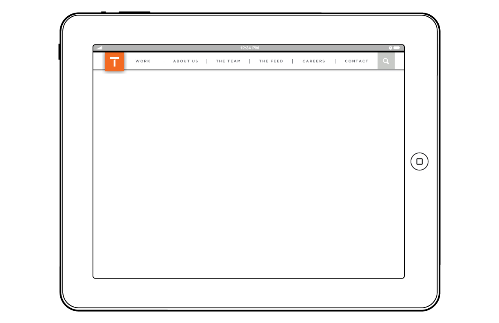
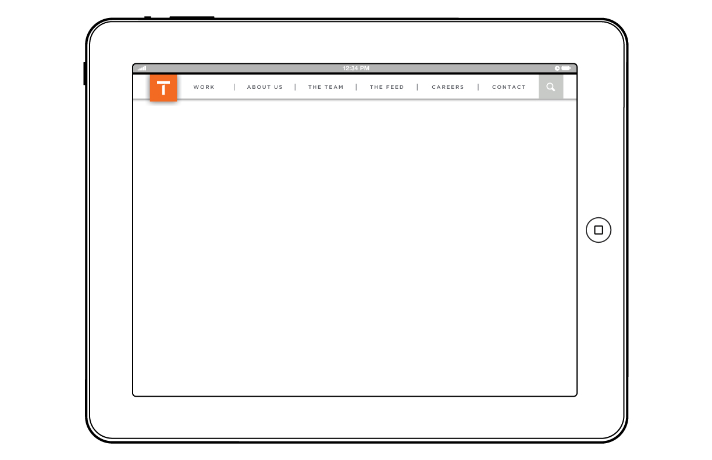

Tuesday, June 4th, 2013
Layouts: Leadership Page
A basic conceptual wireframe of the content layout and design for the 'Leadership' page of 'The Team' section in the new Team One website


Work-In-Progress from the Team One website redesign
View Project on GitHub or View Our Kitchen Sink
When viewing this page: Please keep in mind that this is all WORK-IN-PROGRESS and all creative, design and development will continue to be refined and improved upon as we move forward towards launch
A basic conceptual wireframe of the content layout and design for the 'Leadership' page of 'The Team' section in the new Team One website
After reviewing with the team, we have selected this visual styling (below) for the primary and secondary navigation

Visual design exploration excercise for the primary and secondary navigation menus based on Team One branding and color guidelines


High level exploration of content layout and hierarchy for the Work section's 'Featured Case Study' detail pages
As we are working, we have been putting together our own version of Foundation's 'Kitchen Sink' in order to establish a working style-tile of sorts
VIEW THE TEAM ONE KITCHEN SINK ›(below: screenshots)

High level concept for the landing page experience - EVERYTHING BELOW THE NAV IS SIMPLY FPO
As a user hovers over the ‘T1 Icon’ in the primary navigation, the white ‘T’ will slide out of frame to show the ‘Home’ icon. This indicates to the user that selecting the link drives back to the global ‘Home’ page
This animation shows basic functionality for the navigation system when viewed on a mobile device
The 'Default', 'Open', and 'Secondary-Open' states of the mobile navigation

Alternative styling of the mobile navigation dropdown

The basic layout of primary navigation on mobile, tablet and destop devices.
 


This is a visualization of the responsive breakpoints we will be targeting for desktop/tablet


Work in progress architecture

This is an example of the functionality that we plan to implement for the sort/filter capabilities on
Reference: Isotope on MetaFizzy
This will be a place where we post WIP (work-in-progress) content showcasing some of the design and development brainstorming, concepting, and, decision-making as we move forward. Although this is not a blog, like a blog, the newest content will always be found at the top of this page.
Reference: Isotope on MetaFizzy